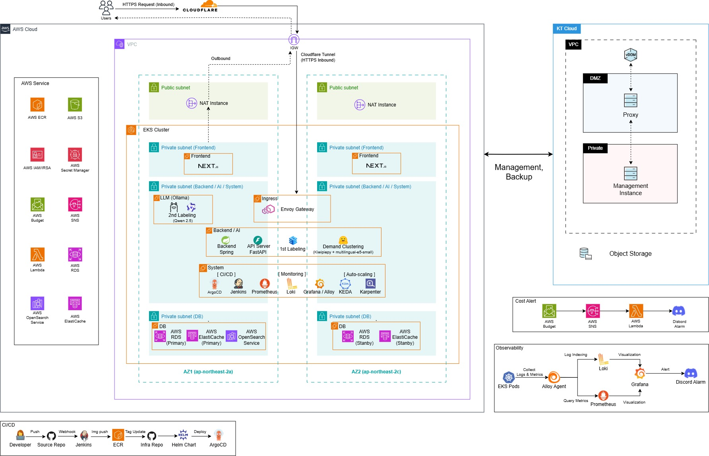

Frontend · Backend · AI가 moongcheap-service Chart 1개를 쓰고, 차이는 base → env → services → overrides 4단계 Values로만 관리합니다.
KT CLOUD TECH UP · 통합 프로젝트 · 팀 프로젝트 대상
MoongCheap · AI 역경매 공동구매 플랫폼
AWS EKS Multi-AZ 위의 FE · BE · AI 서비스를 공통 Chart와 GitOps 규칙 하나로 배포하는 구조를 만들고, 운영 중 생긴 병목을 실측으로 해결했습니다.
01
프로젝트 개요
소비자가 수요를 먼저 모으면 판매자가 가격으로 응찰하는 수요 집결형 AI 역경매 공동구매 플랫폼입니다.

02
담당 파트
Cloud 파트 5인 중 CI/CD 전체(서비스 컨테이너화 · Jenkins CI · ECR · GitOps · ArgoCD 배포)와 AI · LLM 서비스 배포를 맡았습니다.
develop / prod / platform ApplicationSet이 서비스별 Application을 생성하고, AppProject로 Service와 Platform의 배포 권한을 나눴습니다.
Jenkins가 SHA 태그로 ECR에 Push하고 GitOps Repo의 Tag를 갱신해, 운영 중인 Pod가 어떤 Commit인지 바로 추적할 수 있습니다.
코드 변경과 배포 상태 변경의 리뷰를 분리하고, 서비스 팀이 넘겨줄 항목(Port, Health Check, 환경 변수)을 정의해 협업 경계를 정했습니다.
AI 팀에게 CPU · GPU · Memory 요구량, 추론 API, 이미지 크기, 모델 저장 위치를 받아 다른 서비스와 같은 공통 Chart · GitOps 흐름으로 EKS에 배포했습니다.
03
트러블슈팅
CI/CD를 운영하며 생긴 문제를 노드를 늘리거나 장비를 바꾸지 않고, 로그와 실측 데이터로 원인을 찾아 추가 비용 없이 해결했습니다.
노드에 여유가 있는데 ArgoCD · Jenkins가 Pending
| 증상 | 노드 자원에 여유가 있는데도 ArgoCD · Jenkins Pod가 Pending 상태로 남았습니다. |
|---|---|
| 원인 | 노드당 Pod 한도가 17개라 Too many pods로 스케줄링이 거부됐습니다. |
| 해결 | VPC CNI Prefix Delegation을 켜고 maxPods: 110으로 설정했습니다. 서비스 영향이 없도록 인프라를 내리는 시간대(평일 22시 이후)에 적용했습니다. |
| 결과 | 노드당 최대 Pod 수 17개 → 110개 (6.5배), 노드 추가 없이 해결 |
인프라를 켠 뒤 CI 서버가 1시간 반 넘게 안 열림
| 증상 | 평일 오전 9시에 인프라를 자동으로 켠 뒤 CI 서버가 1시간 반 넘게 열리지 않아, 그동안 빌드를 할 수 없었습니다. |
|---|---|
| 원인 | initializeOnce가 꺼져 있어 Jenkins가 기동할 때마다 플러그인 약 100개를 다시 설치했습니다. |
| 해결 | initializeOnce: true 설정 한 줄로 최초 1회만 설치하도록 변경했습니다. |
| 결과 | 기동 시간 96분 이상 → 2.6분 (97%↓) |
백엔드 빌드 1회 45분
| 증상 | 백엔드 빌드 1회에 45분이 걸렸습니다. |
|---|---|
| 원인 | 빌드 Pod의 메모리 요청값이 실제 사용량보다 커서, 빌드할 때마다 노드가 4번 추가되며 그만큼 스케줄링을 기다렸습니다. |
| 해결 | 빌드 Pod 46개의 실제 리소스 사용량을 측정해 요청값을 다시 산정했습니다. |
| 결과 | 빌드 시간 45분 → 16분 (64%↓), 빌드당 노드 추가 4회 → 1회 |
CI 기동97% 단축
96분 이상 → 2.6분
BUILD64% 단축
노드 추가 4회 → 1회
POD LIMIT6.5배
노드 추가 비용 없이
04
회고
요청값 조정으로 백엔드 빌드를 45분에서 16분으로 줄였지만, 캐시나 병렬화처럼 파이프라인 자체를 개선하는 단계까지는 가지 못했습니다.
다시 한다면의존성과 이미지 레이어 캐시를 도입하고, 변경된 서비스만 빌드하도록 파이프라인을 나누겠습니다. 빌드 시간을 지표로 수집해 개선 효과를 계속 추적하겠습니다.
CD는 공통 Helm Chart와 ApplicationSet 규칙으로 맞췄지만, CI는 Frontend · Backend · AI 팀마다 파이프라인 구성이 달라 단계와 규칙이 일관되지 않았습니다.
다시 한다면Build · Scan(Trivy · gitleaks) · Push · Tag 갱신 단계를 공통 Jenkins 템플릿(Shared Library)으로 만들고, 각 팀은 언어별 빌드 설정만 넘기도록 해 CI도 CD와 같은 수준으로 표준화하겠습니다.